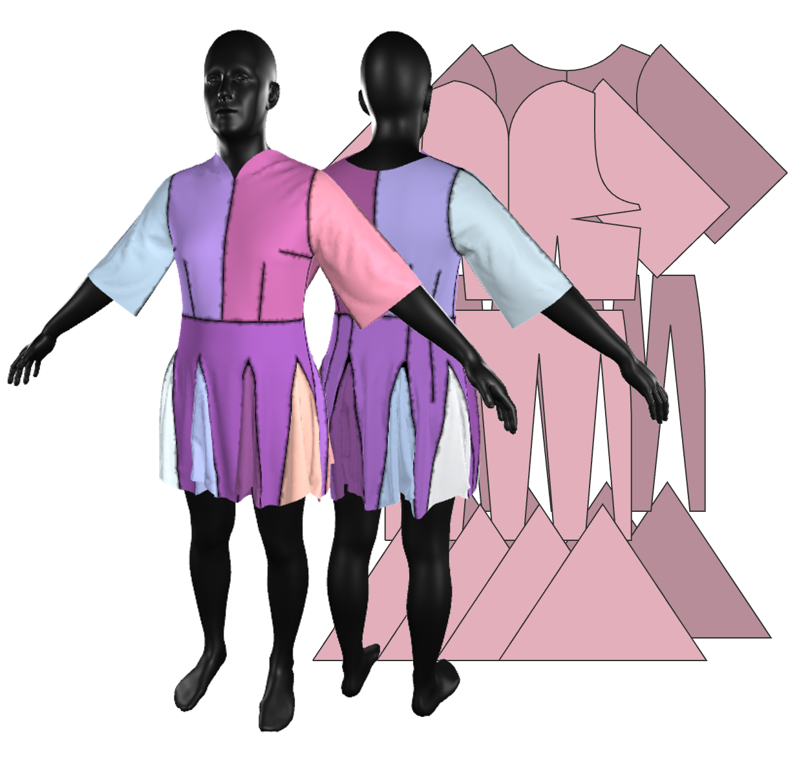

AIpparel: A Large Multimodal Foundational Model for Digital Garments
Kiyohiro Nakayama1* Jan Ackermann1,2*† Timur Levent Kesdogan1,2*† Yang Zheng1 Maria Korosteleva2 Olga Sorkine-Hornung2 Leonidas Guibas1 Guandao Yang1 Gordon Wetzstein1
1Stanford University
2ETH Zürich
* Equal contribution.
† Work done as a visiting researcher at Stanford.
2025 Computer Vision and Pattern Recognition (CVPR 2025)

AIpparel is a multimodal foundational model for digital garments trained by fine-tuning a large
multimodal
model on a custom
sewing pattern dataset using a novel tokenization scheme for these patterns. AIpparel generates complex,
diverse,
high-quality sewing
patterns based on multimodal inputs, such as text and images, and it unlocks new applications such as
language-instructed sewing pattern
editing. The generated sewing patterns can be directly used to simulate the corresponding 3D garments.
Dataset
GarmentCodeData-Multimodal Dataset extends GarmentCodeData (GCD) with additional, rich annotations.
Specifically, we provide textual descriptions of garments, including a descriptive text that decribes the garment's style in detail,
and a speculative text that describes a suitable occasion for the garment. Moreover, we also provide pairs of garments that are edited version of each other.
They are paired with the suitable editing instructions.
Dataset Samples

The upper garment features long sleeves and a short oval neckline in the front,
with a similarly shaped back neckline. It includes a godet skirt with 8 panels.
Method
AIpparel uses a novel sewing pattern tokenizer (light blue region) to tokenize each panel into a set
of
special
tokens (light green region). Panel vertex positions and 3D transformations are incorporated using positional
embeddings (colored arrows) to the tokens. AIpparel takes in multimodal inputs, such as images and
texts
(light orange region), to output sewing patterns using autoregressive sampling (light grey region). Finally,
the
output is decoded to produce simulation-ready sewing patterns (light pink region).
Image to Sewing Pattern Reconstruction
Left: our model can reconstruct suitable sewing patterns from the input image alone.
In contrast, SewFormer does not produce simulation-ready sewing patterns despite fine-tuning.
Right: our model also achieves state-of-the-art performance on the existing SewFactory dataset.
Text to Sewing Pattern Generation
our model can generate sewing patterns following text descriptions. Our generated sewing patterns closely follow the textual details as highlighted.
Sewing Pattern Editing
Our model can take an existing sewing pattern and edit it based on textual instructions.
The resulting sewing pattern closely follow the style of the original garment while performing the desired editing.
Citation
@article{nakayama2024aipparel,
title={AIpparel: A Large Multimodal Generative Model for Digital Garments},
author={Kiyohiro Nakayama and Jan Ackermann and Timur Levent Kesdogan
and Yang Zheng and Maria Korosteleva and Olga Sorkine-Hornung and Leonidas Guibas
and Guandao Yang and Gordon Wetzstein},
journal = {Computer Vision and Pattern Recognition (CVPR)},
year={2025}
}